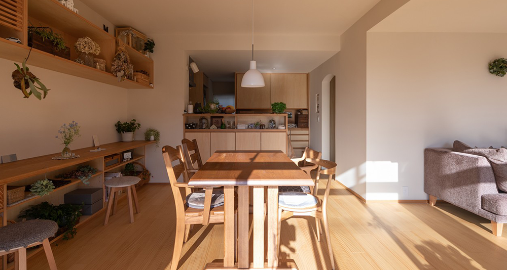

常見問題 Q&A
A1： 一般商品詳細頁會註明該商品有無庫存, 無現貨商品可點擊補貨後通知。 客製化商品一律接單後製作。
A2： 因網路商品有上萬多數量，人力不足、資料庫龐大的情況下，很難在第一時間檢查各商品的庫存量，造成顧客的困擾，我們深表歉意，會加強控管商品上架的庫存狀況。
A3：網路商品皆是量產品，金額較為便宜。門市擺放的商品皆是台灣工廠製造居多，可訂製、改色的商品款式也較多，但產量較少，因此網路商品相較下金額有些許落差。
A4：配送天數約4~7天。出貨時間會先電話確認後才安排，可提前預訂商品後再致電客服確認出貨時間。
A5：森活木工沒有提供回收舊家具的服務。
建議您下單後先與環保局大型廢棄物回收單位聯絡回收時間，再與我們確認出貨時間，以便送貨時可以幫忙將舊家具搬運至指定地點。（搬運件數以您購買的商品件數為主）
A1： 挑選商品 確認訂單 結帳 客服聯繫 等待到貨
A2： 7天鑑賞期為商品全新狀態與包裝完整之情況下才可以受理退換貨。個人因素需退換貨的情況，會收取來回運費與人事費用。（商品外包裝可自行保留，一旦由司機拆除後取回則不負保管責任）
A3：我們有客製化服務，若有需求請帶著商品參考圖、所需尺寸到各門市進一步討論，因訂製商品不得退換貨，建議當面討論確認訂製需求。
A4：顧客下訂單後，我們會查詢庫存並電話通知客戶，商品是否有現貨、缺貨或停產。若商品缺貨，會告知下次到貨日期。
A5：若有樓梯，4樓以上或電梯無法進入，會加收樓層費用，以總價計算，一層樓加1％服務費。
A1：森活木工可為您運送到指定港口，運費另計，可致電客服洽詢。
A2： 網路商品皆是量產品，因此部份商品因製作數量龐大而委託國外工廠製作，部分材料會仰賴國外進口。
A3：若遇到商品損傷、瑕疵，請先將受損或瑕疵部分拍照，並聯絡客服，客服人員了解後會為您免費更換新商品。若因個人使用不當、色差、不喜歡、尺寸不對等個人因素，會有額外收取費用。
A1： 來電告知退貨原因 提供產品瑕疵或損傷照片 審核 開立服務單並安排取回貨物 物流前往取貨 根據客戶需求更換或退回商品
A2： 皆為一年保固服務，終身保修。（終身保修服務：當保固期過後，商品損傷需維修服務，皆可致電給我們，不會有找不到人維修的情況，費用收取方式依商品損傷程度及運送地區評估。聚會場所、營業店家除外。）
A3：若是非人為損傷的大型商品需載回維修，在保固期內，我們會立即安排司機載回商品，不加收任何運費。若是人為損傷需維修服務，會以商品大小、地區評估運費及維修費。
A4：如需退貨請致電客服人員，告知退貨原因。運費依照商品大小計算，司機會安裝、定位完後請在場收貨人仔細驗貨，再收款離開。若因個人喜好、尺寸估算錯誤、色差、等非商品本身物提而退貨，會酌收商品包裝費與搬運費。
A5：以匯款方式退款，金額視情況而定。